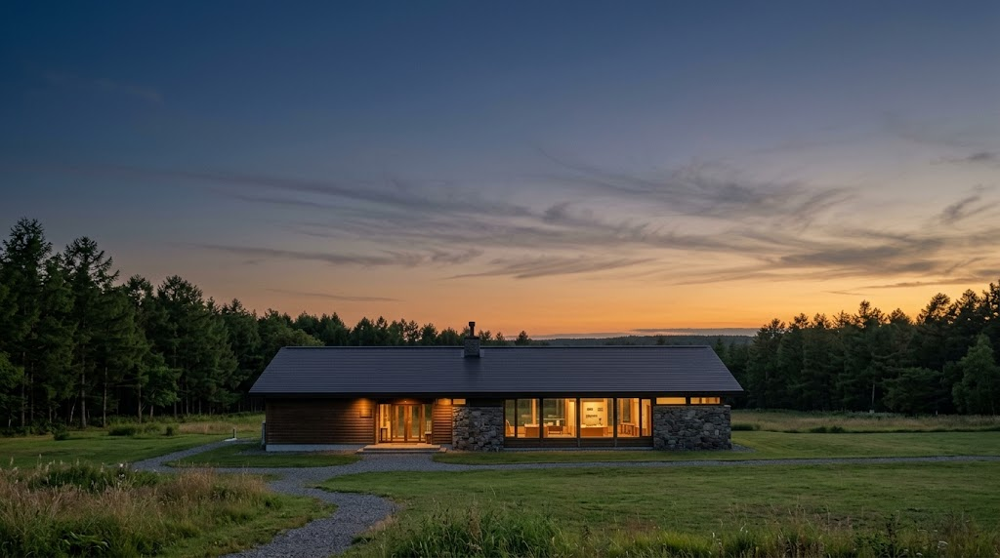
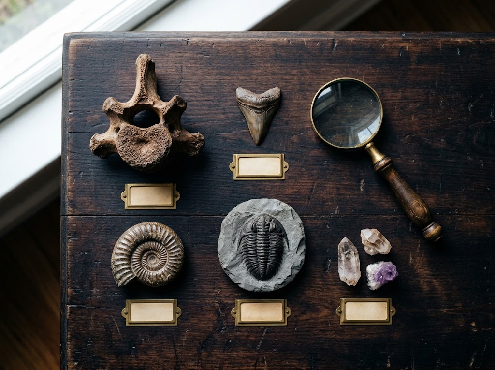
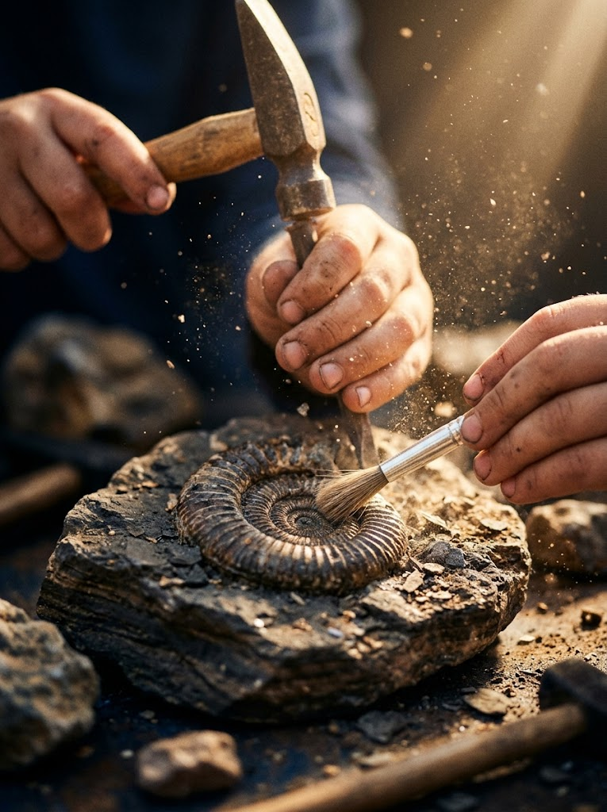

北海道 足寄町
太古の海に生きた哺乳類の姿を、足寄の大地から掘り出された化石とともにたどる博物館です。
展示の中心は、足寄動物群と呼ばれる後期漸新世の海生哺乳類化石です。海生哺乳類の進化をテーマに、「謎の海岸生活者デスモスチルス」や「海に帰った哺乳類クジラ」といったテーマ展示で解説しています。


館内では、本物のアンモナイトなどの化石を含む石から、化石を掘り出す「ミニ発掘体験」ができます。
化石のレプリカづくりなど、子どもから大人まで楽しめる参加型メニューも用意しています。見るだけでなく、手を動かして足寄の自然史にふれられます。
前々から行きたかったけど、やっとお邪魔が出来ました。巨大恐竜の化石に期待してると、ちょっとがっかりするかもね。
メインは地元で発掘されたアショロアで、大きかったのはクジラやシャチの骨格標本でした。
子供向けの体験メニューなど充実していそうなので、子供さんは喜ぶのではないかな？
あと足寄や釧路方面での化石の採取体験が出来る様なので、日時が合えば参加したいです。
とても楽しめる。毎日通いたいと言うほどで目的は化石発掘体験でとても良いのが女の子でも男の子でも興味が持てるように化石とクリスタル等の綺麗な石や水晶等出来る発掘体験が色々ある事。
それ以外も500円～1,500円くらいまでの魅力的な発掘体験でサメやアンモナイトや三葉虫などなど大人から子供まで楽しめて、展示物も見やすくゆっくり見て楽しみ学ぶことが出来る博物館です。
3回目から1年間は入場料無料になるので楽しみやすく、子供は真剣に取り組みます。スタッフの方も丁寧に説明してくれて良いです
| 施設名 | 足寄動物化石博物館 |
|---|---|
| 住所 | 北海道足寄郡足寄町郊南1丁目29-25 |
| 電話番号 | 0156-25-9100 |
| 休館日 | 毎週火曜日（祝日の場合はその翌日）、12月28日～1月4日 |
| 公式サイト | www.museum.ashoro.hokkaido.jp |
| メール | staff@museum.ashoro.hokkaido.jp |